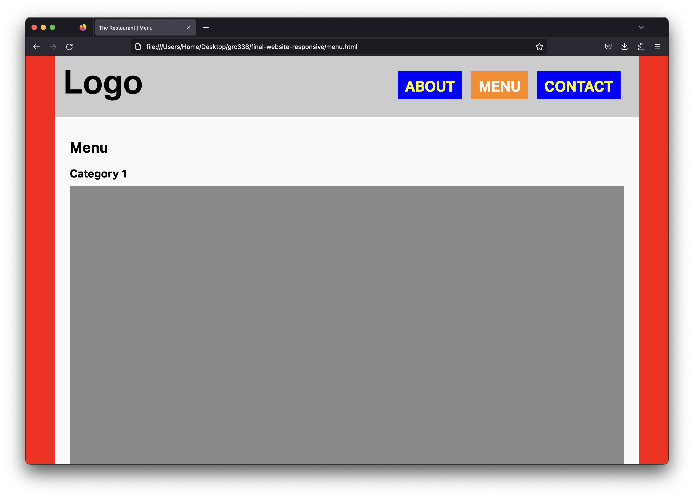
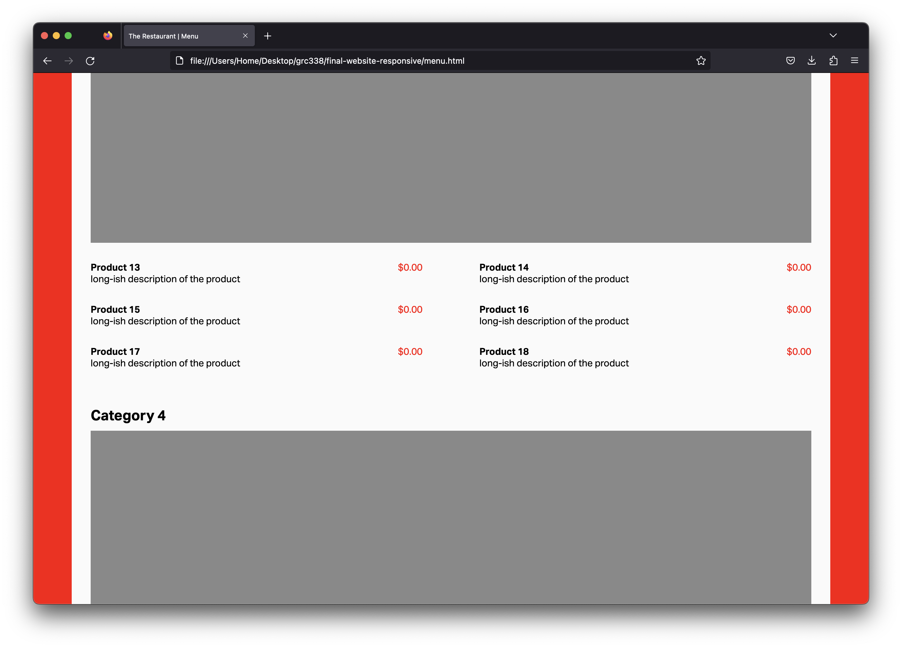
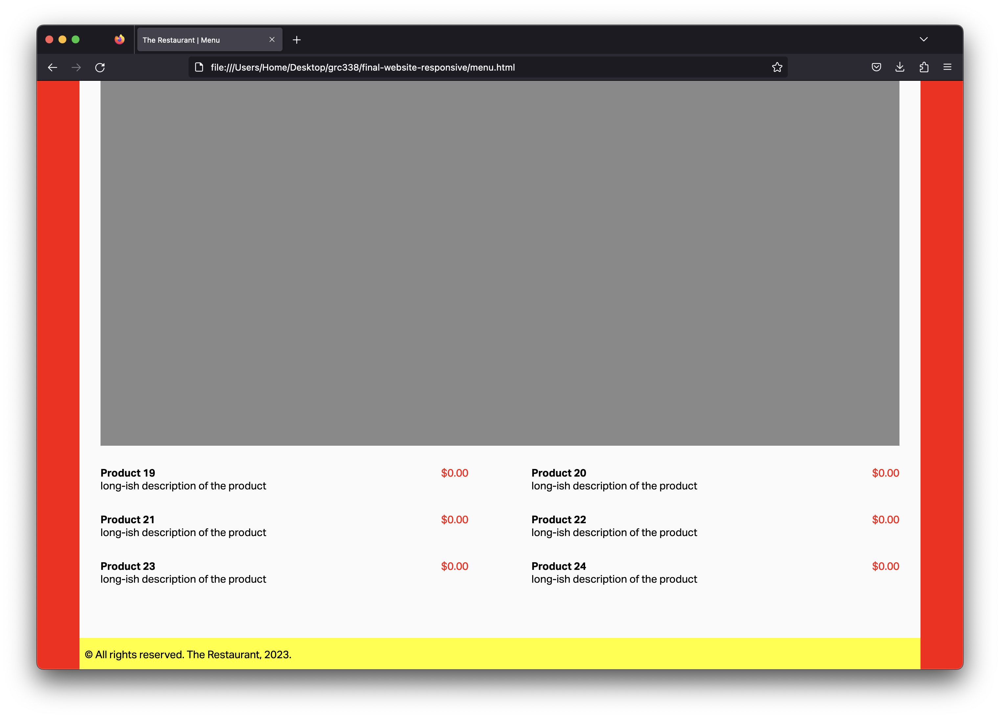

Using the layout from the last assignment, use media query as necessary to make it adapt to different sizes. On desktop, you want to make the website look as close as possible to the screenshots below:









You will need the following line on the bottom of your CSS, then:
@media screen and (min-width: 60em) {
}
Start by reading my feedback from previous assignments, so you don’t make the same mistakes.
If you haven’t yet, you’ll need to include the following rule in your CSS:
body {
font-family: sans-serif;
}
You also need the following rule in your CSS:
div.container {
position: relative;
min-height: 100vh;
}
To make each link to change color when it’s the selected page, give a class selected to its li in HTML, and use nav ul li.selected a { } as the selector of a new rule in CSS. (This rule doesn’t need to be in the media query.)
Use an <article> element in your about.html and contact.html, then style it with light blue in CSS.
Include on the media query only what’s absolute necessary. (I only used three rules and a total of seven declarations in the media query.)
When you’re done, use tools such as FreeFormatter, HTML Formatter, or Code Beautify to organize your HTML code.
Penalties in the list of easy mistakes to avoid are 20 points now. Three or more mistakes is an automatic zero, with no further comments. There’s no reason not to avoid all of them, though.
Don’t rewrite all the properties for an element on its declaration in the media query. Write only what changes in bigger sizes.
Make sure to use appropriate, semantic class names.
Use proper headings for headings, proper paragraph tags for each paragraph, appropriate list and list items tags for the lists, etc.
Make sure to use appropriate, semantic property values in your CSS.
Don’t forget to test in different screen sizes.
Make sure to include the <meta name="viewport" content="width=device-width, initial-scale=1.0"> tag in your HTMLto have your page rendering correctly on mobile phones.
Make sure to avoid the simple mistakes. Each mistake from the list of simple mistakes to avoid will be a 20‑point penalty. Three or more mistakes is an automatic zero, with no further comments. It’s easy to avoid them all, though.
Don’t change the hierarchy of your HTML based on how the pages render on the browser. “I don’t like the bullets” is not a good reason not to use lists or list items; you can style the bullets out in CSS. “I want the navigation to be bigger” is not a good reason to make them headings; again, just style it in CSS.
Go to your public repository on GitHub, and open a new folder named grc338/website-responsive. (It’s a different URL from last week.)➤
Create a new index.html file and commit. ➤
Upload all four HTML files (index.html, about.html, menu.html and contact.html) to your GitHub repository. ➤
Upload your CSS file.
Upload all your image files too.
Click on your name to check if it’s working.
Check Canvas for deadlines.